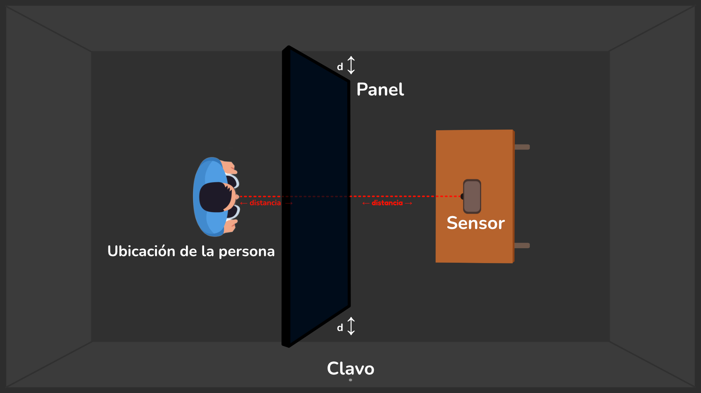
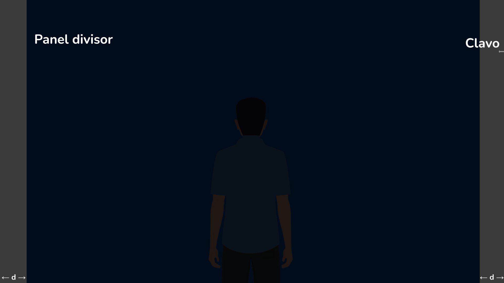
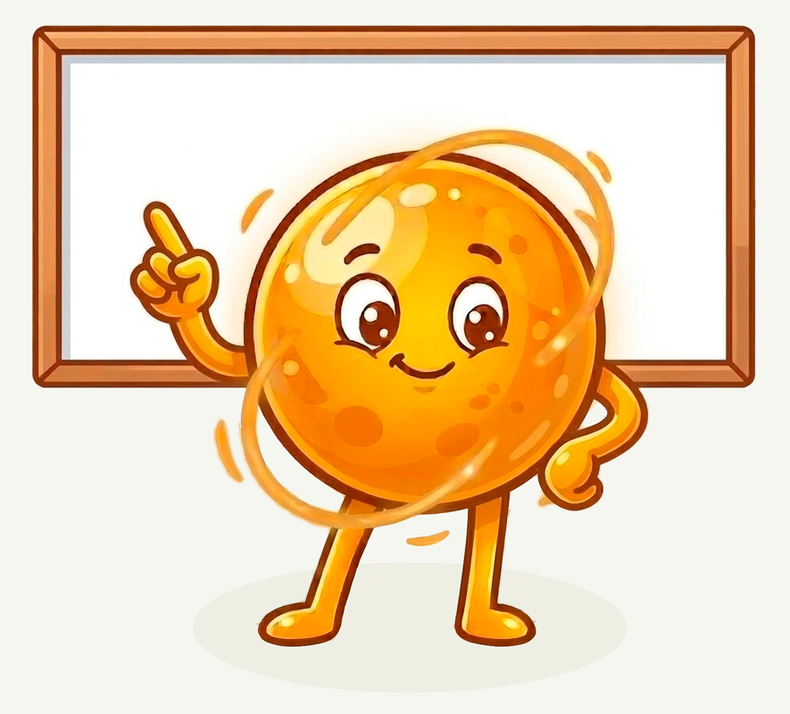

🕵️♂️ Misión: Iluminar lo invisible
Imagina una habitación rectangular sumergida en la oscuridad. En el centro, un panel negro divide el espacio en dos partes iguales. Este panel no llega a tocar las paredes, dejando aberturas libres a ambos lados.
Tú te encuentras en un extremo de la habitación con un puntero láser. En el lado opuesto, exactamente frente a ti y a la misma distancia del panel, se ubica un pequeño sensor rectangular. El sensor se activará únicamente si el láser incide con precisión en su centro.
En la pared lateral derecha, justo a la altura del centro del panel, hay un clavo donde es posible colgar un objeto.


🎯 Tu objetivo
| Lograr que el rayo láser impacte exactamente en el centro del sensor. |
📜 Las reglas
|
☔️ Lluvia de ideas
|
Si el panel bloquea el camino directo… ¿Cómo podrías lograr que el láser llegue al sensor? 🤔 Anota todas las soluciones que se te ocurran, por más descabelladas que parezcan. 👉🏻 Recuerda: el rayo láser viaja en línea recta. |
👩🏫 Guía para el Docente
🎯 Propósito pedagógico
Este acertijo está diseñado para plantear un desafío que, de entrada, puede parecer imposible. Esa sensación de dificultad es deliberada; lo que se busca es activar el debate y el análisis colectivo de los estudiantes durante la lluvia de ideas.
| La meta no es impartir una lección teórica de física, sino lograr que el grupo descubra que puede resolver el problema mediante la incorporación estratégica de un objeto en la habitación. Se espera que los estudiantes lleguen a la conclusión de que colgar un espejo, o una superficie reflectante similar, del clavo de la pared constituye una solución viable para que el láser alcance el sensor respetando todas las reglas. |
⚠️ Importante: Aquí no se introducen todavía términos como reflexión. El foco es netamente práctico; la formalización conceptual se abordará en la siguiente actividad.
🧭Tu rol durante la actividad
 Tu función es actuar como mediador del análisis, brindando el andamiaje necesario sin anticipar la solución. |
⚙️ Desarrollo de la actividad
1️⃣ Planteamiento del reto
Presenta la pregunta central con claridad: ¿Es posible lograr que el punto láser llegue al sensor respetando todas las reglas? ¿De qué manera lo harían?
👉🏻 Recuerda dejar claras todas las reglas antes de iniciar la discusión.
2️⃣ Lluvia de ideas
Invita a los estudiantes a proponer todas las soluciones que imaginen. Trata cada idea como una hipótesis que el grupo debe analizar. Durante este proceso, mantén estas pautas:
1. Fomenta la argumentación: No aceptes un "sí" o un "no"; pide que fundamenten cada propuesta con un ¿por qué?
2. Promueve la autonomía: Si te preguntan si algo funcionará, devuelve la duda al grupo en lugar de validarla o descartarla tú mismo.
3. Verifica condiciones: Si proponen algo inusual, revisen juntos: ¿Se cumplen las reglas? ¿Qué ocurriría cuando el láser toque ese objeto?
4. Usa referencias sutiles: Si el grupo se estanca, puedes darles una pista relacionada con experiencias cotidianas: ¿Se acuerdan de cuando el Sol refleja en un reloj o en un metal pulido? ¿Nos servirá eso aquí?
3️⃣ Cierre de la lluvia de ideas
La actividad concluye cuando los estudiantes llegan a la conclusión de que un espejo (o algo similar) colocado en el clavo es una solución viable.
⚠️ Importante: No hace falta dar explicaciones teóricas todavía; el éxito es haberlo resuelto colectivamente usando la lógica.
🔬 Transición al experimento
Una vez acordada la hipótesis, motiva al grupo al siguiente paso: ¿Ponemos a prueba nuestra posible solución para ver si funciona en la realidad?